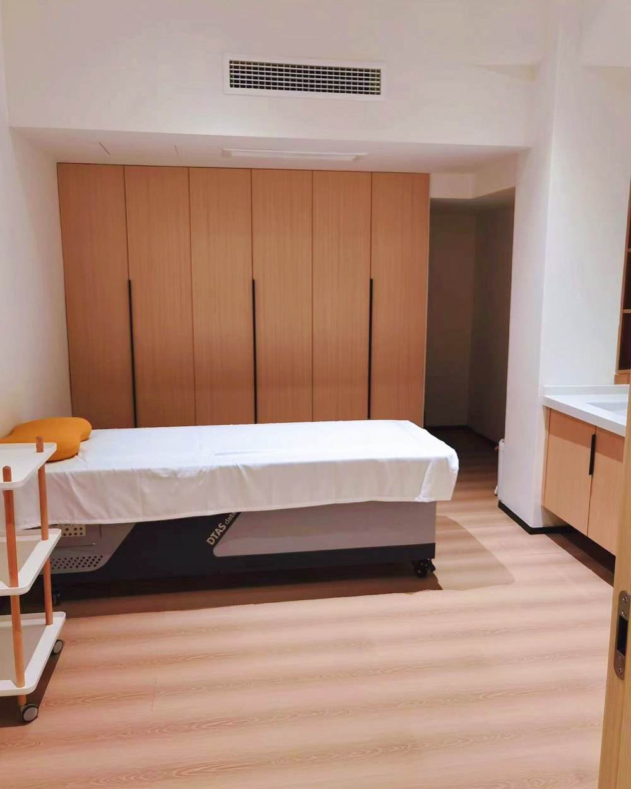

Our senior practitioner looks for where the flow through your whole body is held up, which is often not just where you feel it, and works there with a light, exact hand. That is what the old principle means: the force is small, and where it goes is everything.
The hands-on energy work is the one she is known for, and the one the four-ounces principle describes. What matters most is where the hand is aimed.
The attention is on the whole: the movement of qi and blood, and the main organ systems (the zangfu) the classical texts organise the body around. Where you feel it tells her where to start looking. It is usually not the only place she works.
The image she uses for it is Zhuangzi's cook, who after nineteen years had never blunted his blade: he found the spaces that were already there and let the edge pass through them, entering the gap with something that has no thickness.
The hand moves the way cloud drifts, layer by layer through the whole body.

Her practice · China
The starting point is the body as one connected system. Rather than taking a symptom at face value, she looks at what set it off, and at how the cause and the symptom move with each other. The symptom on its own is never the whole story.
In this tradition illness is silt in a river and health is the flow. Wherever the channel blocks is where symptoms surface, so the work is on the channel rather than on the symptom.
The hands work to set the whole body's qi moving. It looks gentle, though soft and firm are at work together, still water running deep. As the classical line has it: the greatest sound is silence, the greatest form has no shape.
Which of the three she uses, and in what proportion, depends on what she sees in you. It is estimated in your Observation Reading and told to you before you commit.
The one she is known for. A light, exact hand that follows the body's channels and works on the whole rather than on one spot. Gentle enough that there is nothing to brace for.
A smooth-edged tool drawn along oiled skin, over the channels that run close to the surface. It is used where the body feels stiff, heavy or knotted close to the surface. It leaves temporary marks, set out below.
Dried mugwort burned close to a point to warm it. It is used for people who always seem to feel the cold, tire easily, or whose hands and feet never quite warm up. It is heat on skin, so it is applied with care.
Two of these three mark the skin or use heat. None of it is dramatic, and none of it is a massage either. You should know which you are agreeing to before you book a flight rather than after.
Where you would wait · her practice, China
Sessions are charged by the day, not as a package, and the number of days is her judgement rather than a menu choice. Quoting a figure before you have been read would mean quoting for work nobody has looked at yet.
Your Observation Reading gives her estimate of how many days and what they would cost, in writing, before you commit to anything. The number is confirmed once she has seen you in person. If you go ahead, the £850 is credited in full against that.
Estimated in your reading and confirmed in person. Each weekday: one hour with her, an interpreter throughout, and the rest of the day is yours. In her practice, most people come for a few days to three weeks.
Follows from the number of days, not the other way round.
Interpreter hours, and whether a companion travels with you.
Booked by you, in your own name and to your own taste. We can suggest places near her practice, and we take no commission.
We would rather lose the enquiry than take someone this cannot help. Everything begins with the Observation Reading, and some readings conclude that sessions in person would add little.
How long you would come for, and what it would cost, is written into your Observation Reading. That is the step to take, and it is the only one you need to decide on now.
The Observation Reading · £850Questions before you start: yinyangwell@wesconnex.com